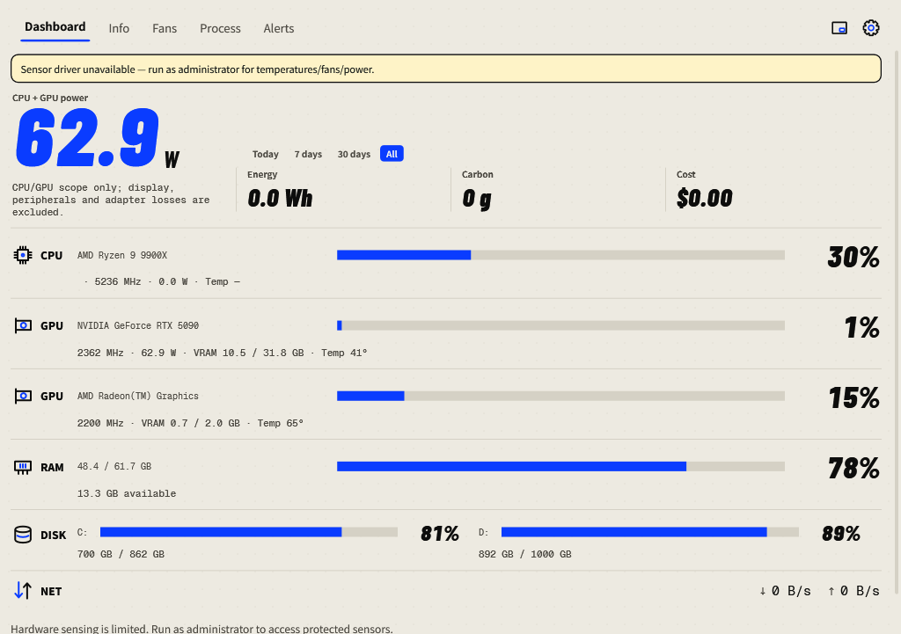
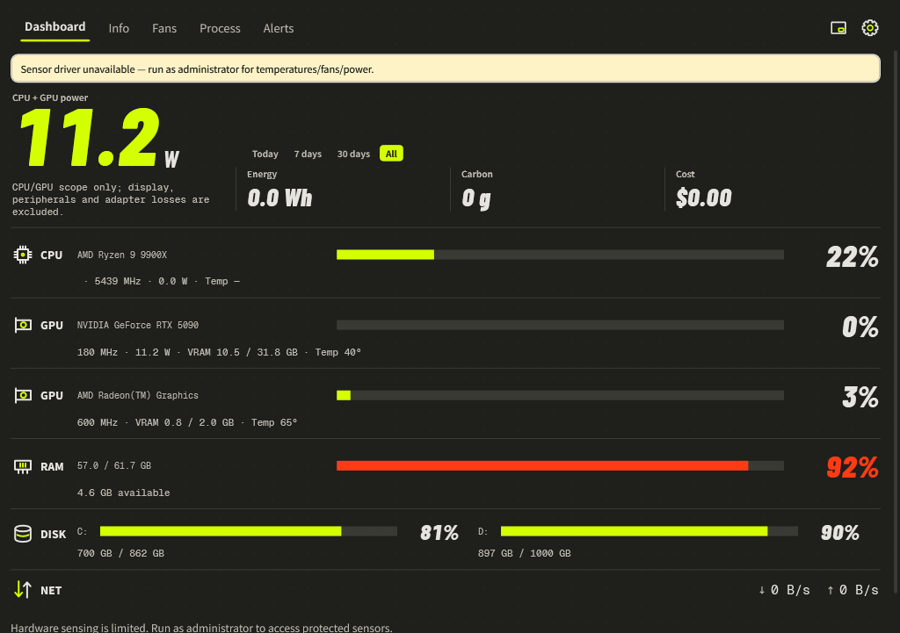

Dashboard
Read your hardware at a glance, then select a row to investigate it.

What each reading means
| Reading | Meaning | What to check |
|---|---|---|
| Power | Current watts for the scope named above the number. | The scope label and missing-sensor notices; read about power. |
| CPU | Processor usage, frequency, available package power and temperature. | Select the CPU row to inspect temperature trends. |
| GPU | One row per visible GPU: load, clocks, memory, temperatures and available power. | The GPU model and named sensor. Integrated memory can be shared. |
| RAM | Used and total system memory, plus available memory. | Select RAM to find memory consumers. |
| DISK | Used capacity and used percentage for each fixed drive. | A full bar means a full drive, not busy disk I/O. |
| NET | Current download and upload rates. | Direction and units, such as B/s, KB/s or MB/s. |
Investigate a reading
- Select CPU or a GPU row for its temperature trends.
- Select RAM for memory trends and memory-ranked processes.
- Select DISK for processes ranked by disk activity.
- Use the metric controls on Process to change the view. Inspecting another GPU does not change your primary GPU for alerts.
Choose an energy period
Select Today, 7 days, 30 days or All above the cumulative figures. Energy, Carbon and Cost use the selected period; current watts remain a live reading. Totals cover recorded monitoring, not every hour the PC has existed.
Understand colors and missing data
The accent color identifies ordinary readings. The alarm color marks readings over their configured limits. Read the numeric value and unit as well as the color. A — means no valid reading is available. A reported 0 remains a valid zero.
Readings delayed or hardware-sensing notices explain stale samples and limited access. Use Read again or the monitoring action when offered. Missing samples are not filled with zero.
Paper Pop and Volt
Open Settings → General → Background. Choose Paper Pop (light) or Volt (dark), then press OK. Both use the same layout.
